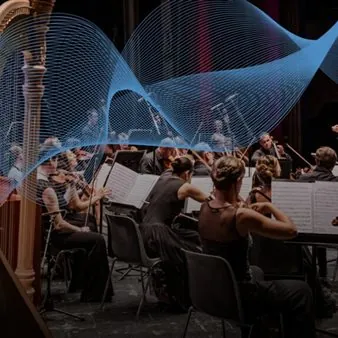

sab 31 ott · dalle 20:45
Concerto A Symphonic Flight
La Base Aerea di Rivolto, sede del 2° Stormo e Casa delle Frecce Tricolori, è lieta di ospitare la NordEst Sinfonia con il direttore Marco Feruglio in un evento promosso dall’Ente Regionale Teatrale del Friuli Venezia Giulia con il sostegno della Regione Autonoma Friuli Venezia…
 Indicazioni
Indicazioni
- Costi e prenotazioni
- Costo non indicato · Prenotazione non indicata
- Programma
- Programma da verificare. Apri la fonte ufficiale per orari e possibili aggiornamenti.
- In caso di maltempo
- Nessuna indicazione specifica pubblicata.
- Note
- Acquisito automaticamente dalla fonte.
L’EVENTO
Descrizione completa
Per una sera, l’Hangar Riparazioni della Base aerea di Rivolto, sede del 2° Stormo dell’Aeronautica Militare e casa delle Frecce Tricolori, si trasforma in una sala da concerto. Protagonista è la NordEst Sinfonia, orchestra che riunisce 90 musicisti legati al territorio regionale, oggi attivi in prestigiose istituzioni musicali internazionali, tra cui la Filarmonica della Scala, l’Accademia Nazionale di Santa Cecilia, le orchestre della Radiotelevisione e della Filarmonica Slovena e la Filarmonica di Zagabria. Il programma si apre con la prima esecuzione assoluta di A Symphonic Flight , composizione commissionata al friulano Renato Miani e ispirata alle evoluzioni delle Frecce Tricolori. Il brano traduce in musica diversi momenti del volo, dall’accensione dei motori al decollo, fino alle figure disegnate dagli aerei nel cielo. Segue la Sinfonia n. 1 di Gustav Mahler, conosciuta anche come Il Titano . Il concerto nasce dalla collaborazione tra l’Ente Regionale Teatrale del Friuli Venezia Giulia e il 2° Stormo dell’Aeronautica Militare. Per l’occasione, all’interno della Base aerea sarà inoltre allestita un’esposizione di velivoli e sistemi missilistici.
Informazioni e prenotazioni Ingresso gratuito con prenotazione obbligatoria https://biglietti.ertfvg.it/eventi/a-symphonic-flight.htm
Prenotazioni dal 21 al 26 ottobre 2026, salvo esaurimento anticipato dei posti.
Per accedere alla Base aerea, ogni partecipante dovrà registrarsi ed effettuare una prenotazione individuale a proprio nome. Il biglietto è nominativo e non cedibile a terzi. I posti non sono numerati.
IL PROGRAMMA
Programma e orari
Appuntamenti raccolti dalle fonti elencate. Dove manca un orario, non è ancora disponibile in questa scheda.
Programma pubblicato
- Dal 2026-10-31 al 2026-10-31
INFORMAZIONI UTILI
Prima di partire
- Controllare la fonte prima di partire.
ORGANIZZAZIONE